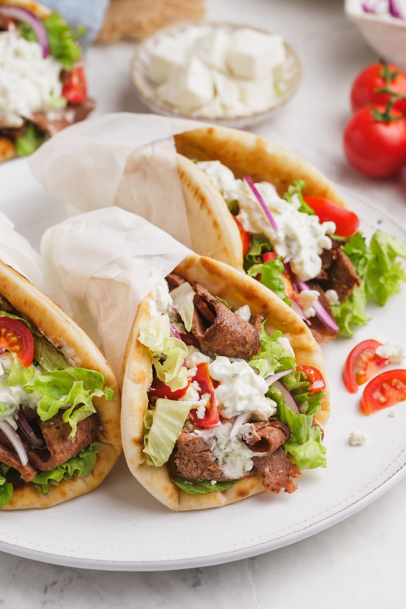

Gyro

Description
The gyro is a Greek wrap often stuffed with lamb, tzatziki, feta cheese, lettuce, onions and tomatoes and wrapped with a pita bread.
Ingredients
- Pita Bread
- Lamb Meat
- Tzatziki Sauce
- Feta Cheese
- Lettuce
- Onions
- Tomatoes
Steps
- Cook lamb meat. I often pan-fry, but the method I've seen at restaurants is off a rotisserie.
- While meat is cooking, prepare tzatziki sauce and chop your desired vegetables.
- When meat is almost ready, begin warming the pita bread.
- Once meat is finished, place tzatziki first on the pita, then the meat, then the vegetables. Top off with more tzatziki and then some feta cheese.
Home